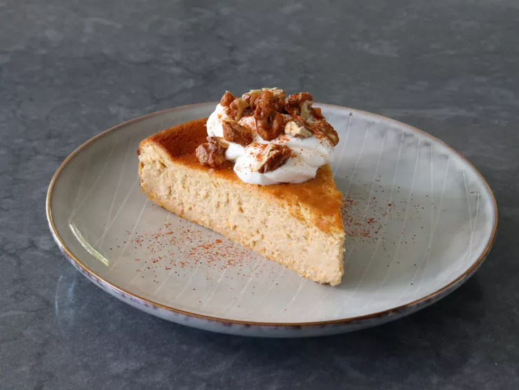

Butternut Squash Cheesecake

Description
This butternut squash cheesecake is genius—its lighter, more flavorful,
and just as rich and decadent as its pumpkin cheesecake cousin.
This one is baked Basque cheesecake-style, hot
and fast, needs no crust, and will be nicely browned on top.
Ingredients
- 1 large butternut squash, roasted to yield 1 1/2 cups mashed squash
- 16 ounces cream cheese, softened
- 3/4 cup white sugar
- 1/4 cup all-purpose flour
- 1 teaspoon kosher salt
- 1/4 cup maple syrup
- 1/2 teaspoon ground cinnamon
- 1/2 teaspoon ground ginger
- 1/4 teaspoon freshly grated nutmeg
- 1 1/2 teaspoons vanilla extract
- 5 large eggs
- 1 cup heavy cream
Steps
- Preheat the oven to 400 degrees F (200 degrees C). Oil a 10-inch springform pan, line with parchment, and set aside. Line a baking sheet with parchment.
- Cut butternut squash into thick crosswise slices, remove seeds, and place on the lined baking sheet.
- Roast in the preheated oven until very soft, about 1 hour. When cool enough to handle, separate the flesh from the skin; discard skin. Mash squash until smooth, measure out 1 1/2 cups, and set aside to cool completely. Reserve any remaining squash for another use.
- Increase the oven temperature to 425 degrees F (220 degrees C).
- Add softened cream cheese, sugar, flour, and salt to a bowl, and cream together with a spatula until very smooth.
- Add maple syrup, 1 1/2 cups mashed butternut squash, cinnamon, ginger, and nutmeg. Mix with an electric mixer or whisk until combined; mix in vanilla. Add eggs, one at a time, beating well after each addition. Stir in cream.
- Pour batter into prepared springform pan. Tap the pan lightly on the counter to settle the batter.
- Bake in the preheated oven until cheesecake is almost fully set, 50 to 60 minutes. The center should wiggle very slightly If the pan is shaken back and forth. If the center seems soupy, continue baking for a few more minutes.
- Remove and let cool for 5 minutes. Run a thin knife between the outside edge of the cheesecake and the inside of the springform ring to release cheesecake from the ring; it will contract as it cools. Let cool 30 minutes more, then remove outside ring.
- Refrigerate cheesecake for a few hours or up to overnight before serving.